Chapter 5 Creating Some Basic Plots
Reference: R graphics cookbook (https://r-graphics.org/)
The base R contains many basic methods for producing graphics. We will learn some of them in this chapter. These plotting functions are good for very quick exploration of data.
For more elegant plots, we will use the package
ggplot2(next chapter).We will use some simple datasets in base R and
flightsfromnycflights13to illustrate how to create some basic plots in this chapter.
5.1 Scatter Plot
A scatter plot is used to visualize the relationship between two numerical variables. Each point represents one observation, with its horizontal position determined by the \(x\)-variable and its vertical position determined by the \(y\)-variable.
Scatter plots are especially useful for:
Detecting associations (positive, negative, or none)
Identifying nonlinear patterns
Spotting outliers
Checking whether a linear model might be reasonable
The mtcars dataset comes with base R and contains information on fuel consumption and car characteristics.
head(mtcars) # this is a data frame
## mpg cyl disp hp drat wt qsec vs am gear carb
## Mazda RX4 21.0 6 160 110 3.90 2.620 16.46 0 1 4 4
## Mazda RX4 Wag 21.0 6 160 110 3.90 2.875 17.02 0 1 4 4
## Datsun 710 22.8 4 108 93 3.85 2.320 18.61 1 1 4 1
## Hornet 4 Drive 21.4 6 258 110 3.08 3.215 19.44 1 0 3 1
## Hornet Sportabout 18.7 8 360 175 3.15 3.440 17.02 0 0 3 2
## Valiant 18.1 6 225 105 2.76 3.460 20.22 1 0 3 1str(mtcars) # display the structure of the data frame
## 'data.frame': 32 obs. of 11 variables:
## $ mpg : num 21 21 22.8 21.4 18.7 18.1 14.3 24.4 22.8 19.2 ...
## $ cyl : num 6 6 4 6 8 6 8 4 4 6 ...
## $ disp: num 160 160 108 258 360 ...
## $ hp : num 110 110 93 110 175 105 245 62 95 123 ...
## $ drat: num 3.9 3.9 3.85 3.08 3.15 2.76 3.21 3.69 3.92 3.92 ...
## $ wt : num 2.62 2.88 2.32 3.21 3.44 ...
## $ qsec: num 16.5 17 18.6 19.4 17 ...
## $ vs : num 0 0 1 1 0 1 0 1 1 1 ...
## $ am : num 1 1 1 0 0 0 0 0 0 0 ...
## $ gear: num 4 4 4 3 3 3 3 4 4 4 ...
## $ carb: num 4 4 1 1 2 1 4 2 2 4 ...Key variables:
mpg: miles/gallon
wt: weight (1000lbs)
Scatter plot with base graphics
# x-axis: mtcars$wt
# y-axis: mtcars$mpg
# "x =", "y =" are optional
plot(
x = mtcars$wt,
y = mtcars$mpg,
xlab = "Weight (1000 lbs)",
ylab = "Miles per Gallon (mpg)",
main = "Fuel Efficiency vs Vehicle Weight"
) 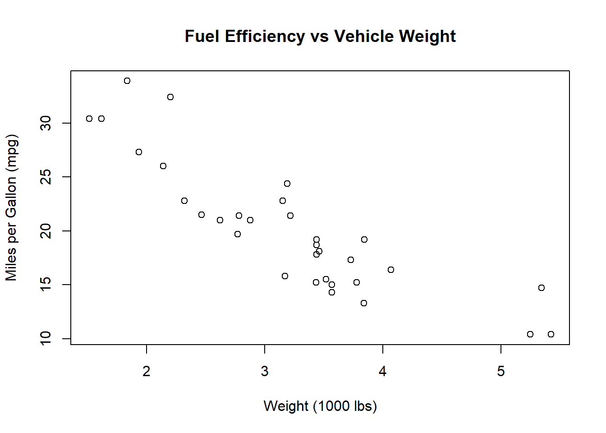
Interpretation:
Heavier cars tend to have lower fuel efficiency
The relationship appears roughly linear and negative
A few points may stand out as unusually heavy or fuel-efficient
You can produce the same plot with plot(mtcars$wt, mtcars$mpg)
Scatter plot when you only have x and y (no dataset)
Scatter plots do not require a data frame. As long as you have two numeric vectors of the same length, you can plot them directly.
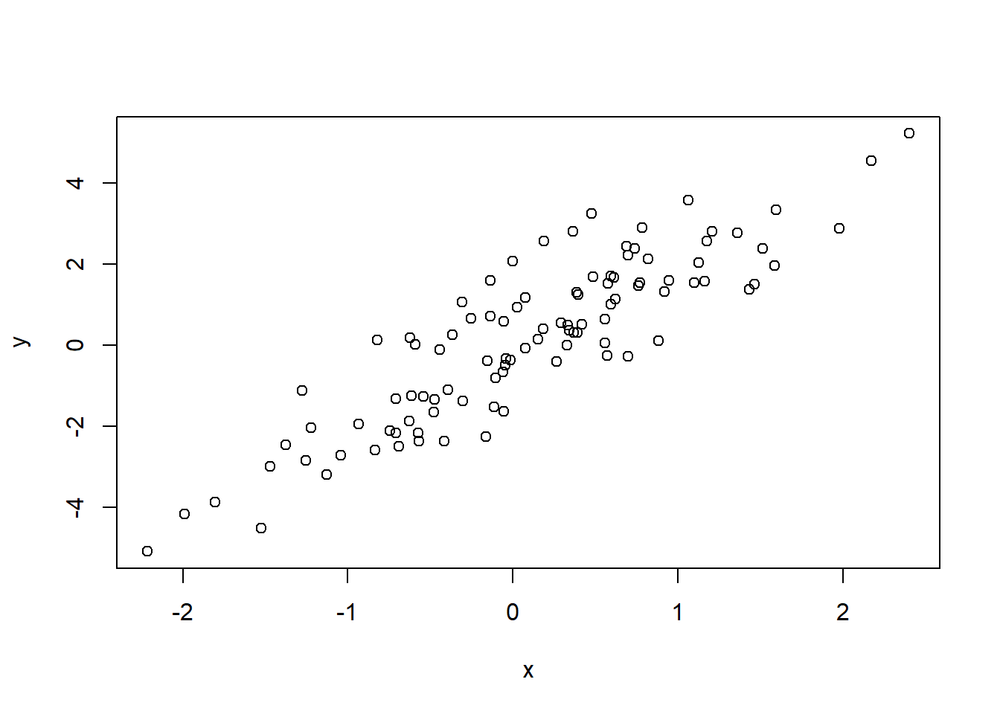
Interpretation:
There is a clear positive linear relationship
The randomness around the line reflects noise
This is a typical pattern generated by a linear model
Nonlinear relationship
Scatter plots are also useful for revealing nonlinear patterns that summary statistics (e.g. covariance, correlation) may miss.
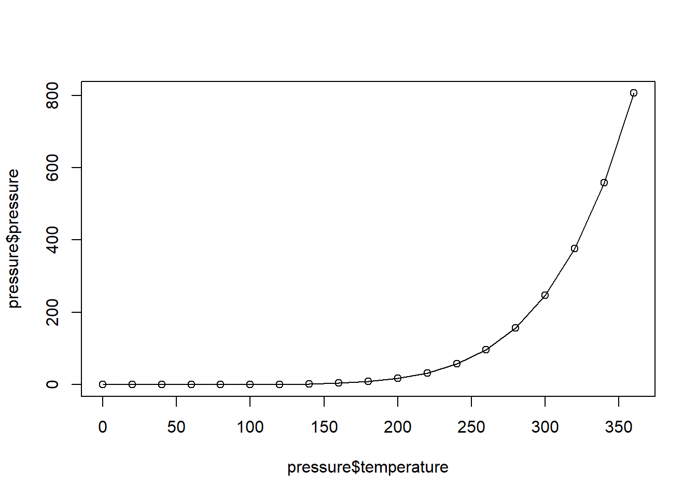
Interpretation:
The relationship is clearly nonlinear
A linear model would be inappropriate here
The scatter plot immediately reveals the underlying structure
Scatter plot: distance vs arrival delay on a single day
Because the full flights dataset contains many observations, plotting all points at once can lead to severe overplotting. A simple solution is to focus on one specific day.
one_day <- flights %>%
filter(month == 1 & day == 1)
plot(
x = one_day$distance,
y = one_day$arr_delay,
xlab = "Flight Distance (miles)",
ylab = "Arrival Delay (minutes)",
main = "Arrival Delay vs Distance (Jan 1)"
)
abline(h = 0) # add a reference line for no delay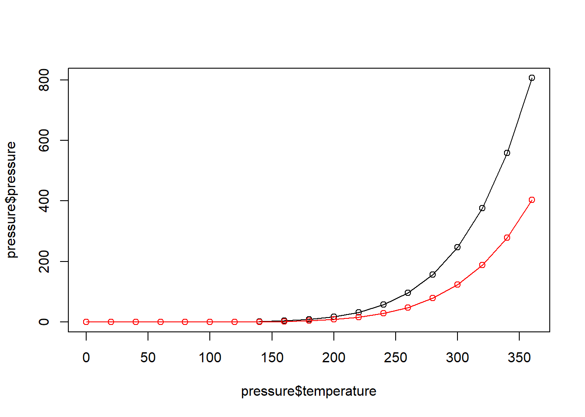
Interpretation:
The number of points is much smaller, making the plot easier to read
Most flights arrive close to on time, regardless of distance
Large delays still appear as outliers
There is no strong linear relationship between arrival delay and flight distance
5.2 Line Graph
A line graph is used to show how a numerical variable changes as another variable changes, especially when the \(x\)-axis has a natural order (for example, time, temperature, or distance). Compared to a scatter plot, a line graph emphasizes the trend by connecting points in order.
In base R, the main difference is the use of type = "l" (l = line).
Example: the pressure dataset (base R)
The dataset pressure contains the relationship between:
temperature: temperature in degrees Celsius
pressure: vapour pressure of mercury (mm of mercury)
head(pressure)
## temperature pressure
## 1 0 0.0002
## 2 20 0.0012
## 3 40 0.0060
## 4 60 0.0300
## 5 80 0.0900
## 6 100 0.2700Line graph with base graphics
plot(
pressure$temperature,
pressure$pressure,
type = "l",
xlab = "Temperature (°C)",
ylab = "Vapour Pressure (mm of mercury)",
main = "Vapour Pressure vs Temperature"
)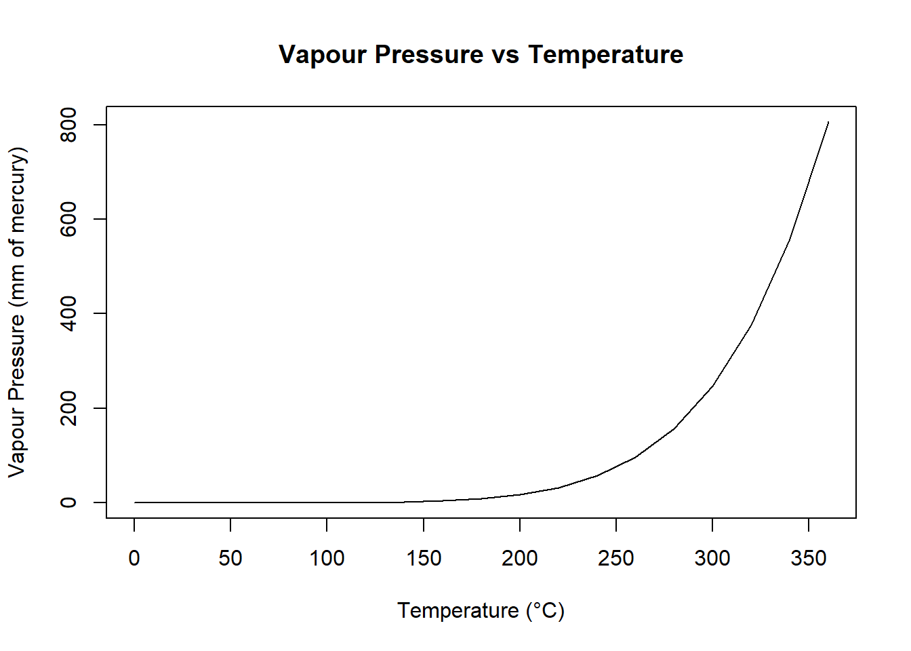
Line graph with base graphics with points
A common style is to show both the line (trend) and the points (observations).
plot(
pressure$temperature,
pressure$pressure,
type = "l",
xlab = "Temperature (°C)",
ylab = "Vapour Pressure (mm of mercury)",
main = "Vapour Pressure vs Temperature"
)
points(pressure$temperature, pressure$pressure, pch = 16)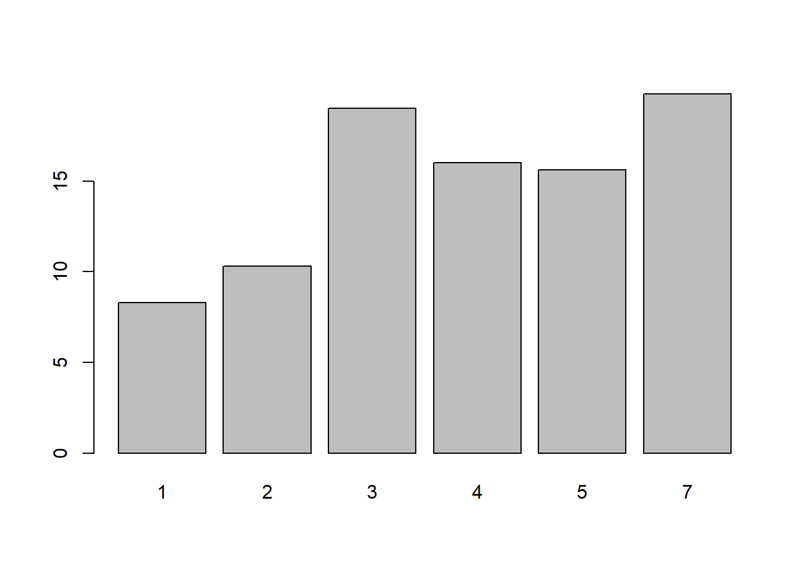
pch = 16 makes filled points, which are easier to see on a line.
Adding another line (illustration)
If you want to compare two curves on the same plot, add the first plot, then use lines() for additional curves.
plot(
pressure$temperature,
pressure$pressure,
type = "l",
xlab = "Temperature (°C)",
ylab = "Vapour Pressure (mm of mercury)",
main = "Vapour Pressure vs Temperature"
)
lines(pressure$temperature, pressure$pressure / 2, col = "red")
points(pressure$temperature, pressure$pressure / 2, col = "red", pch = 16)
legend(
"topleft",
legend = c("Original", "Half (illustration)"),
col = c("black", "red"),
lty = 1,
bty = "n"
)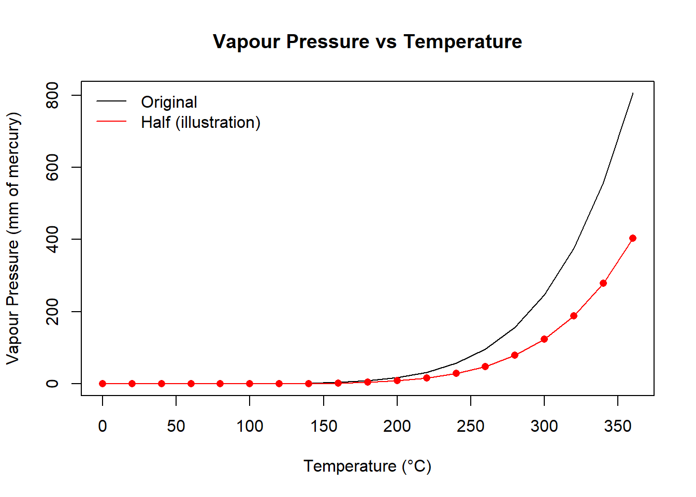
Note: the second curve above is only for demonstrating how to add lines and a legend.
Colors in base R
In base R, the col argument can be specified in several ways:
By name:
"red","cornflowerblue"By number: 1 (black), 2 (red), 3 (green), 4 (blue), …
By hex code:
"#8B2813"By
rgb():rgb(0.1, 0.2, 0.5, 1)
plot(
pressure$temperature,
pressure$pressure,
type = "l",
xlab = "Temperature (°C)",
ylab = "Vapour Pressure (mm of mercury)",
main = "Vapour Pressure vs Temperature",
col = rgb(0.1, 0.2, 0.5, 1)
)
lines(pressure$temperature, pressure$pressure / 2, col = 2)
lines(pressure$temperature, pressure$pressure * 2, col = "#8B2813")
lines(pressure$temperature, pressure$pressure * 3, col = "cornflowerblue")
Common color names
| Color name | Example |
|---|---|
| black | col = "black" |
| white | col = "white" |
| gray | col = "gray" |
| red | col = "red" |
| blue | col = "blue" |
| green | col = "green" |
| yellow | col = "yellow" |
| orange | col = "orange" |
| purple | col = "purple" |
| brown | col = "brown" |
| pink | col = "pink" |
| cyan | col = "cyan" |
Example with flights: average daily departure delay over time
A line graph is a natural choice when the \(x\)-axis is time.
Below we compute the average departure delay for each date, then plot it across the year.
# prepare the data
plot_data <- flights %>%
group_by(year, month, day) %>%
summarize(avg_day_dep_delay = mean(dep_delay, na.rm = TRUE)) %>%
ungroup() %>%
mutate(date = as.Date(sprintf("%d-%02d-%02d", year, month, day)))
plot(
plot_data$date,
plot_data$avg_day_dep_delay,
type = "l",
xlab = "Date",
ylab = "Average departure delay (minutes)",
main = "Average Daily Departure Delay in 2013"
)
abline(h = 0, lty = 2) # reference line at 0 minutes
sprintf and Date
year <- c(2013, 2013)
month <- c(1, 12)
day <- c(5, 3)
as.Date(sprintf("%d-%02d-%02d", year, month, day))
## [1] "2013-01-05" "2013-12-03"A character string may look like a date, but R treats it as plain text.
A Date object is a special data type that represents calendar dates correctly. as.Date(): convert strings to Date objects
Using Date objects allows R to:
order dates chronologically
compute differences in days
plot time on a continuous axis
Character dates are sorted and plotted as labels, not as time.
If a variable represents dates, always convert it to a Date object before analysis or plotting.
5.3 Bar Chart
A bar chart is used when the \(x\)-axis is discrete (categories). There are two common types:
- Bar chart of values. x-axis: categorical variable, y-axis: numeric data (for example, mean, median)
- Bar chart of count. x-axis: categorical variable, y-axis: count (how many observations fall in each category)
Remark (bar chart vs histogram):
Bar chart: \(x\) is discrete categories
Histogram: \(x\) is a continuous variable, and we count observations within intervals (bins)
Bar chart of values with base graphics
# names.arg = a vector of names to be plotted below each bar or group of bars.
plot_data <- flights %>%
group_by(year, month) %>%
summarize(avg_mon_dep_delay = mean(dep_delay, na.rm = TRUE)) %>%
ungroup()
## `summarise()` has grouped output by 'year'. You can override using the
## `.groups` argument.
barplot(
plot_data$avg_mon_dep_delay,
names.arg = 1:12,
main = "Average Monthly Departure Delay",
xlab = "Month",
ylab = "Average departure delay (minutes)"
)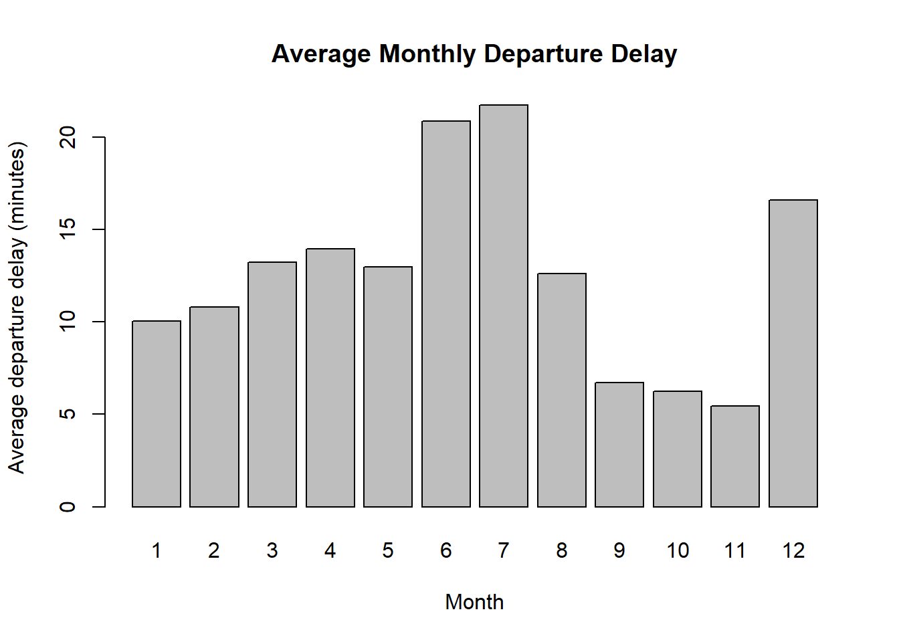
Each bar is a mean computed from many flights in that month.
Bar chart of counts with base graphics
In mtcars, cyl is the number of cylinders (possible values are 4, 6, and 8). We first compute the counts:
To plot the bar chart, we use
barplot(
table(mtcars$cyl),
main = "Distribution of Number of Cylinders",
xlab = "Number of cylinders",
ylab = "Count"
)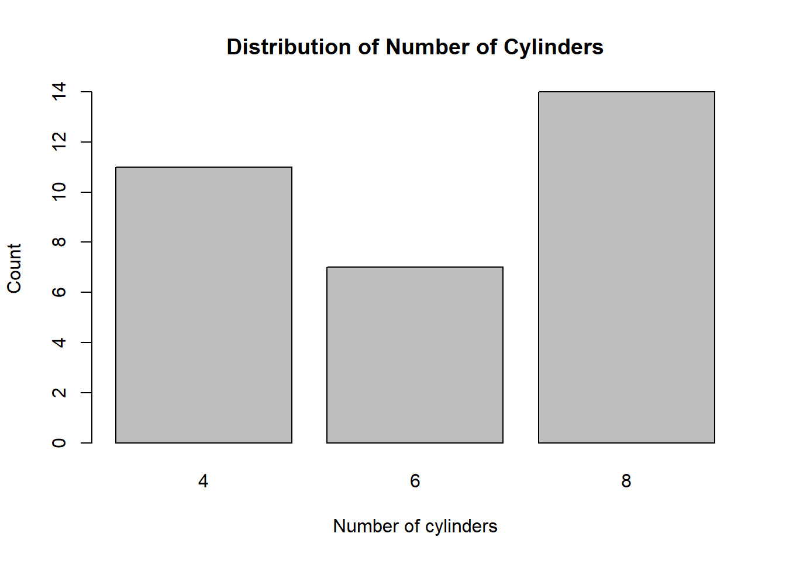
Another count example using flights (number of flights by month):
count <- table(flights$month)
barplot(
count,
names.arg = 1:12,
main = "Number of Flights by Month",
xlab = "Month",
ylab = "Count"
)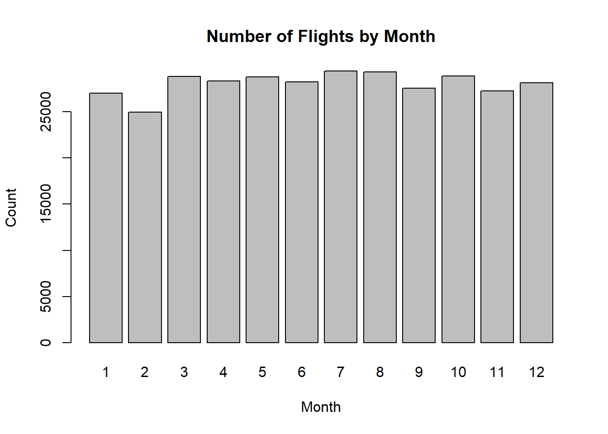
Optional improvement: add the counts on top of the bars.
bp <- barplot(
count,
names.arg = 1:12,
main = "Number of Flights by Month",
xlab = "Month",
ylab = "Count",
ylim = c(0, max(count) * 1.1) # add ~10% headroom
)
text(bp, count, labels = count, pos = 3, cex = 0.7)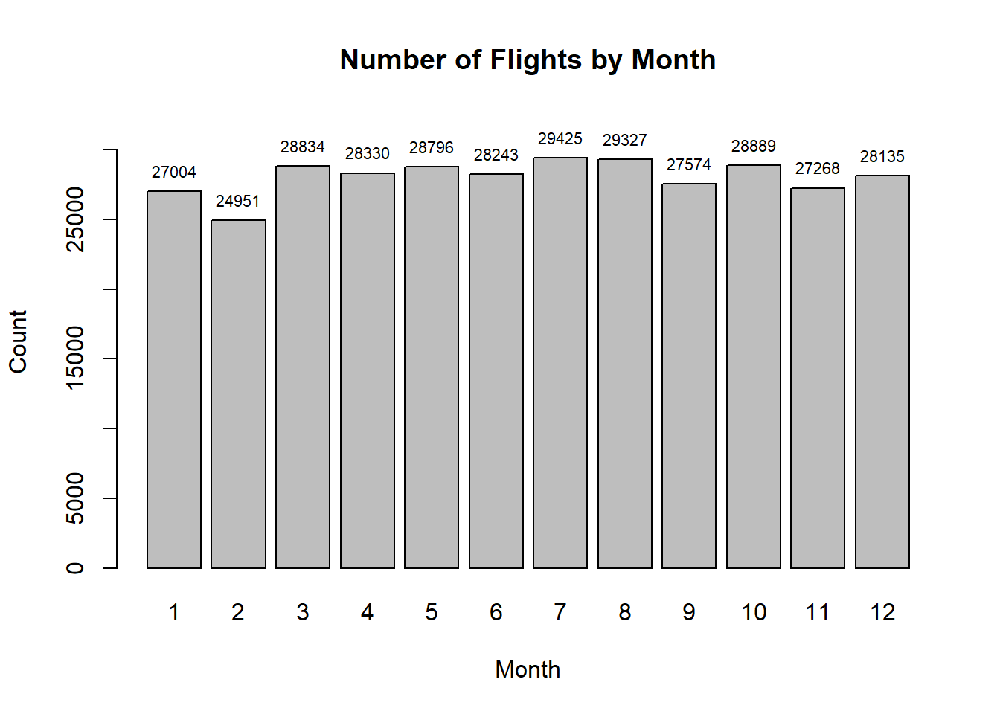
5.4 Histogram
A histogram visualizes the distribution of a continuous variable by dividing its range into bins and counting how many observations fall into each bin.
Example: mpg in mtcars is a continuous variable (miles per gallon).
Histogram with base graphics
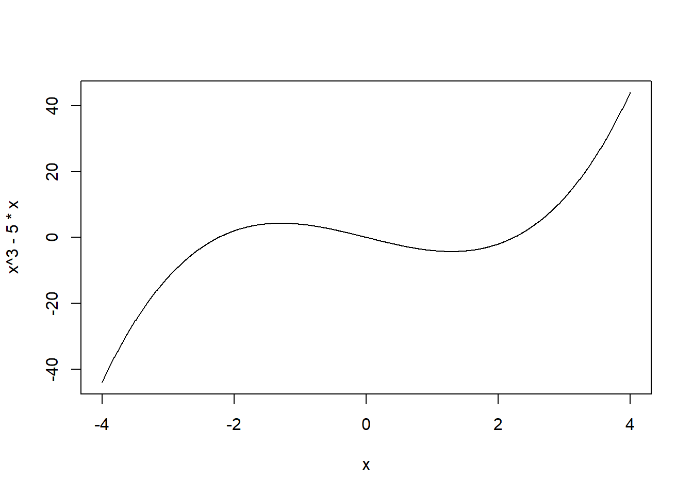
Histogram with base graphics
You can control the binning using breaks.
# Specify approximate number of bins with "breaks"
hist(
mtcars$mpg,
breaks = 10,
xlab = "Miles per Gallon (mpg)",
main = "Histogram of Fuel Efficiency"
)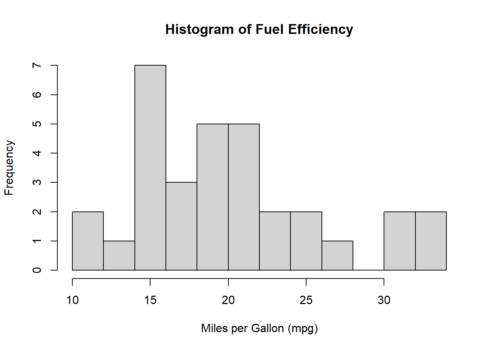
Remark: different choices of breaks change the appearance.
Too few breaks oversmooth the data and may hide important structure.
Too many breaks produce noisy, spiky histograms that are hard to interpret.
Histogram for departure delays in flights
Departure delays contain missing values. (They are removed automatically by hist().)
sum(is.na(flights$dep_delay)) # 8255 missing values!
## [1] 8255
hist(
flights$dep_delay,
breaks = 100,
main = "Distribution of Departure Delays",
xlab = "Departure delay (minutes)",
ylab = "Frequency"
)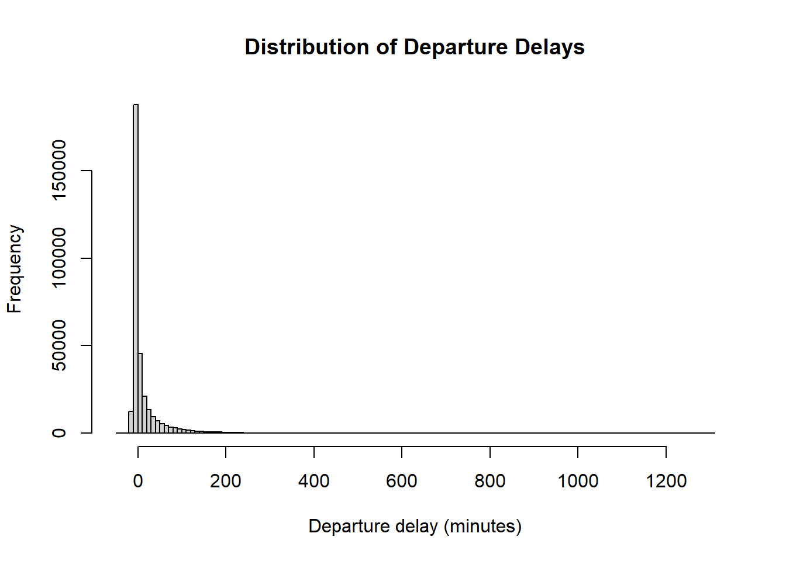
If you want the histogram to show relative frequency (so the total area is 1), use freq = FALSE:
hist(
flights$dep_delay,
breaks = 100,
main = "Distribution of Departure Delays",
xlab = "Departure delay (minutes)",
ylab = "Frequency",
freq = FALSE
)
Because delays can have extreme outliers, it is often helpful to zoom in.
hist(
flights$dep_delay,
breaks = 100,
xlim = c(-20, 200),
main = "Departure Delays (Zoomed In)",
xlab = "Departure delay (minutes)"
)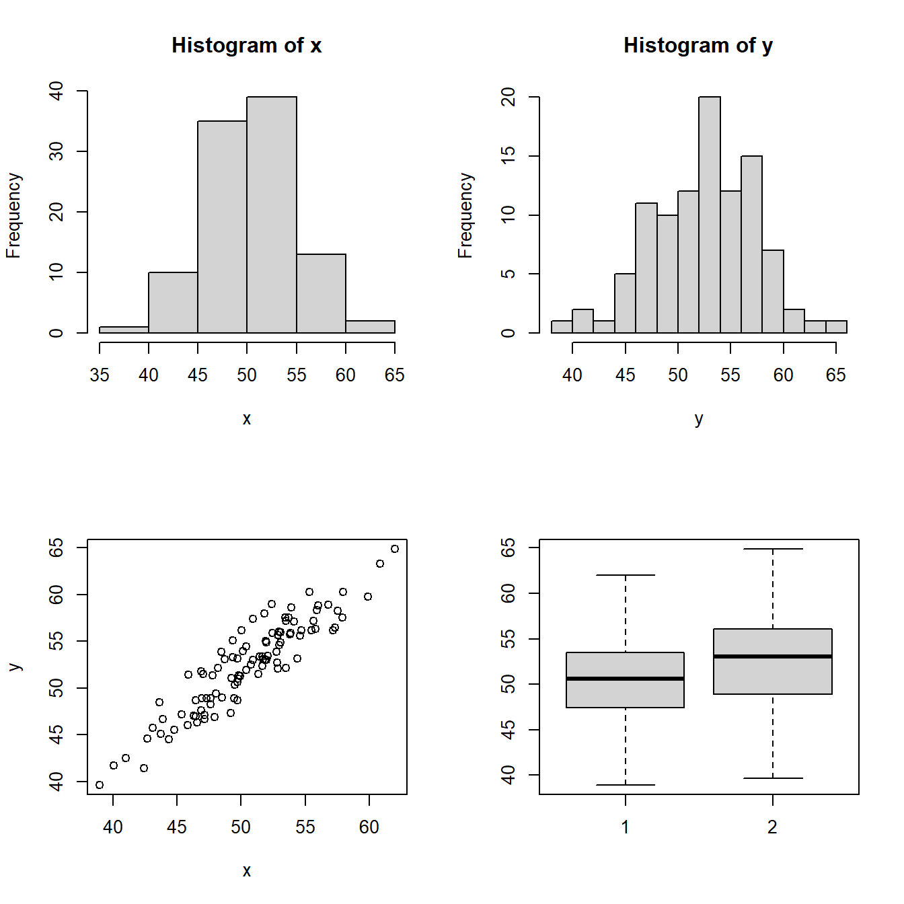
One data-driven method for choosing the histogram bin width: breaks = "FD" (the Freedman–Diaconis rule is designed to approximately minimize the integral of the squared difference between the histogram (i.e., relative frequency density) and the density of the theoretical probability distribution.)
hist(
flights$dep_delay,
breaks = "FD",
xlim = c(-20, 200),
main = "Departure Delays (Zoomed In)",
xlab = "Departure delay (minutes)"
)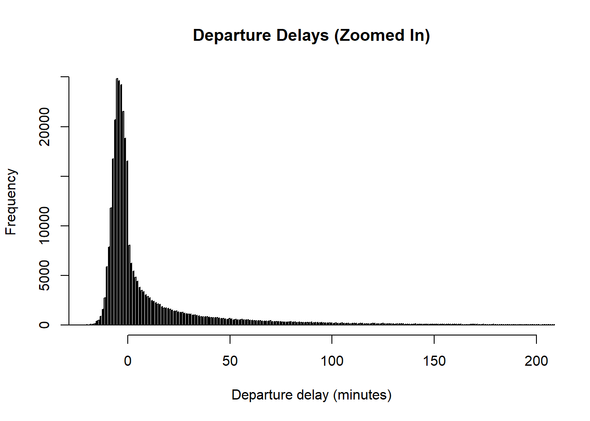
5.5 Box Plot
A boxplot provides a compact summary of a numerical variable by displaying its distribution through quantiles. It is especially useful for comparing distributions across groups and for detecting outliers.
What a boxplot shows
Median: the line inside the box (50% quantile)
First quartile (Q1) and third quartile (Q3): the lower and upper edges of the box
Interquartile range (IQR): \(Q_3 - Q_1\), representing the middle 50% of the data
Whiskers: extend to the most extreme observations within \(1.5 \times \mathrm{IQR}\) from the quartiles
Outliers: points beyond the whiskers
Boxplots are robust summaries because they rely on quantiles rather than means and standard deviations.
Example: flight arrival delays
We use the flights dataset, where arr_delay records arrival delay in minutes.
A single boxplot
boxplot(
flights$arr_delay,
xlab = "Arrival Delay (minutes)",
main = "Boxplot of Flight Arrival Delays"
)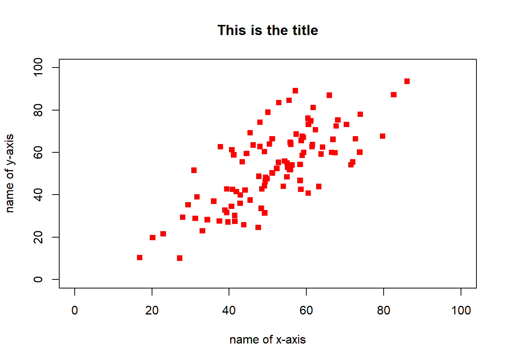
Rotate a boxplot by making it horizontal:boxplot(
flights$arr_delay,
horizontal = TRUE,
ylab = "Arrival Delay (minutes)",
main = "Boxplot of Flight Arrival Delays"
)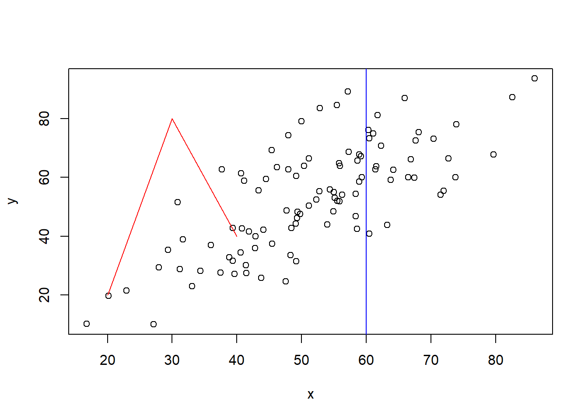
Interpretation:
The median delay is near zero.
The distribution is highly right-skewed.
Large positive delays appear as outliers.
Boxplots by group
Boxplots are particularly useful for group comparisons.
Arrival delay by carrier
boxplot(
arr_delay ~ carrier,
data = flights,
xlab = "Carrier",
ylab = "Arrival Delay (minutes)",
main = "Arrival Delay by Airline Carrier",
las = 2 # rotate labels
)
Interpretation:
Differences in medians show typical performance across carriers.
Box height reflects variability.
Outliers highlight extreme delays for some airlines.
Arrival delay by month
boxplot(
arr_delay ~ month,
data = flights,
xlab = "Month",
ylab = "Arrival Delay (minutes)",
main = "Arrival Delay by Month"
)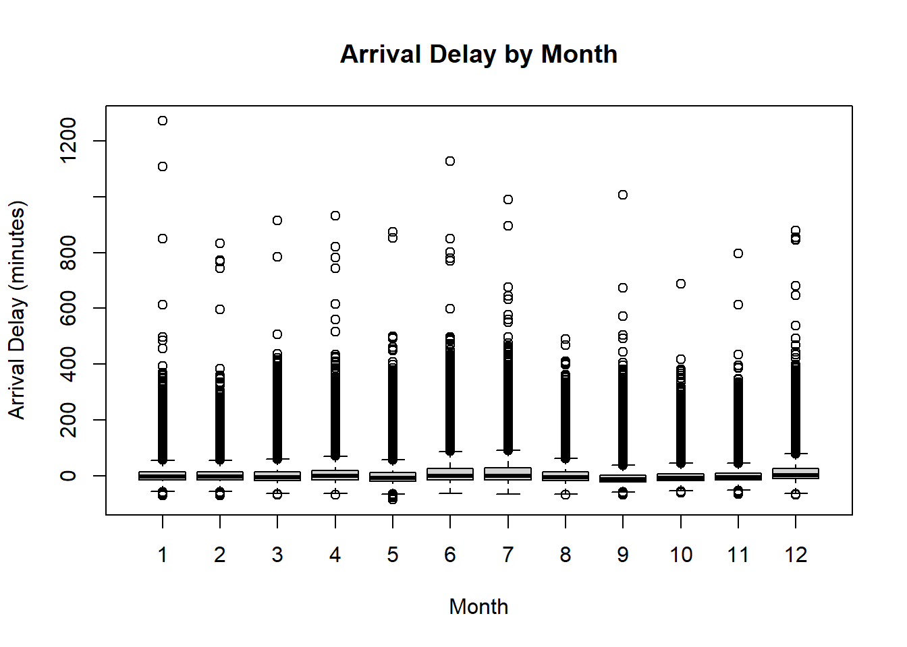
Interpretation:
Seasonal patterns become visible.
Some months show larger variability and more extreme delays.
5.5.1 Transformation of data
For variables like flight delays:
The distribution is highly right-skewed
A few very large delays dominate the scale
Boxplots on the original scale compress most of the data near zero
Taking a log transform:
Spreads out the bulk of the data
Reduces the influence of extreme delays
Makes differences in medians and IQRs easier to see across groups
Practical issue: zeros and negative values
Arrival delays can be:
Zero (on time)
Negative (early arrivals)
So you cannot directly take log(arr_delay).
Possible solutions:
- shift then log: add the minimum
arr_delayand then take log - focus on late flights only
Log arrival delay by carrier (Late Flights Only)
boxplot(
log(arr_delay) ~ month,
data = late,
xlab = "Month",
ylab = "log(Arrival Delay)",
main = "Log Arrival Delay (Late Flights Only)"
)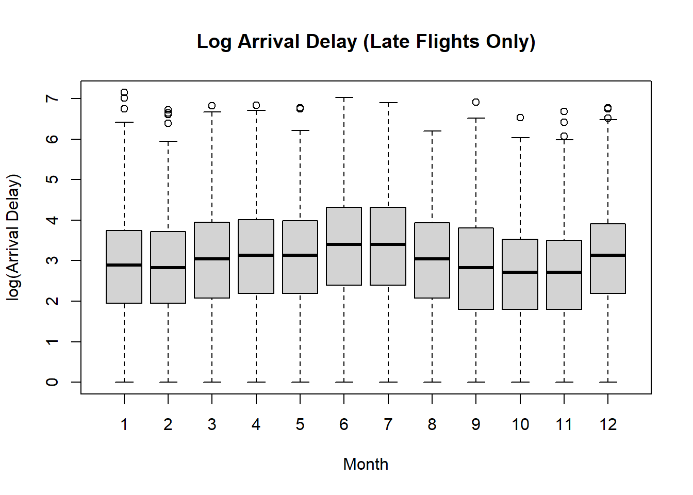
Log arrival delay by month (Late Flights Only)
boxplot(
log(arr_delay) ~ carrier,
data = late,
xlab = "Carrier",
ylab = "log(Arrival Delay)",
main = "Log Arrival Delay (Late Flights Only)",
las = 2 # rotate labels
)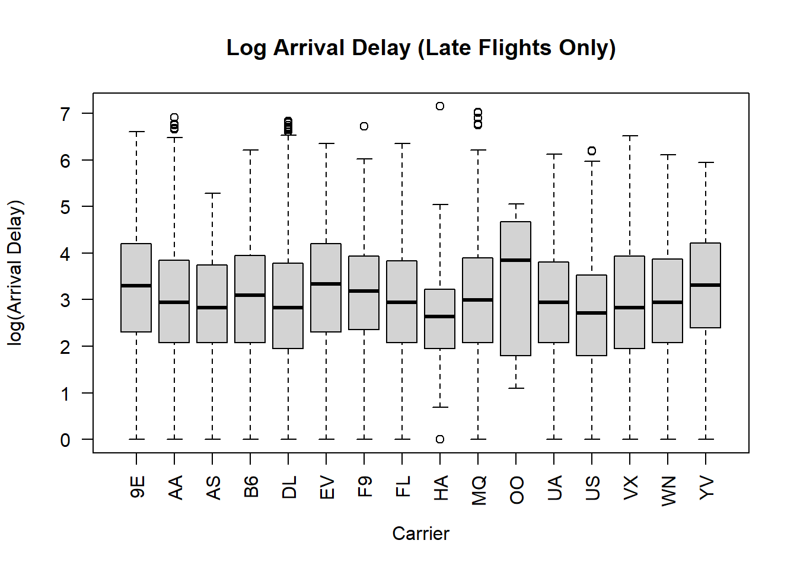
5.5.2 When to use boxplots
To summarize a distribution quickly
To compare distributions across multiple groups
To identify skewness and outliers
When robustness is preferred over mean-based summaries
Boxplots complement histograms: histograms show overall shape, while boxplots emphasize location, spread, and outliers.
5.6 Plotting a function curve
A function plot shows how \(y=f(x)\) changes as \(x\) varies. In base R, curve() is the most convenient tool for plotting a mathematical function because it automatically chooses a grid of \(x\) values and draws the resulting curve.
curve(x^3 - 5 * x, from = -4, to = 4,
xlab = "x", ylab = "f(x)",
main = expression(f(x) == x^3 - 5*x))
curve() is best when you can write the function as an expression in x
Alternatively:
x <- seq(-4, 4, length.out = 1000)
y <- x^3 - 5 * x
plot(x, y, type = "l",
xlab = "x", ylab = "f(x)",
main = expression(f(x) == x^3 - 5*x))
This approach is more general
Plotting a built-in function
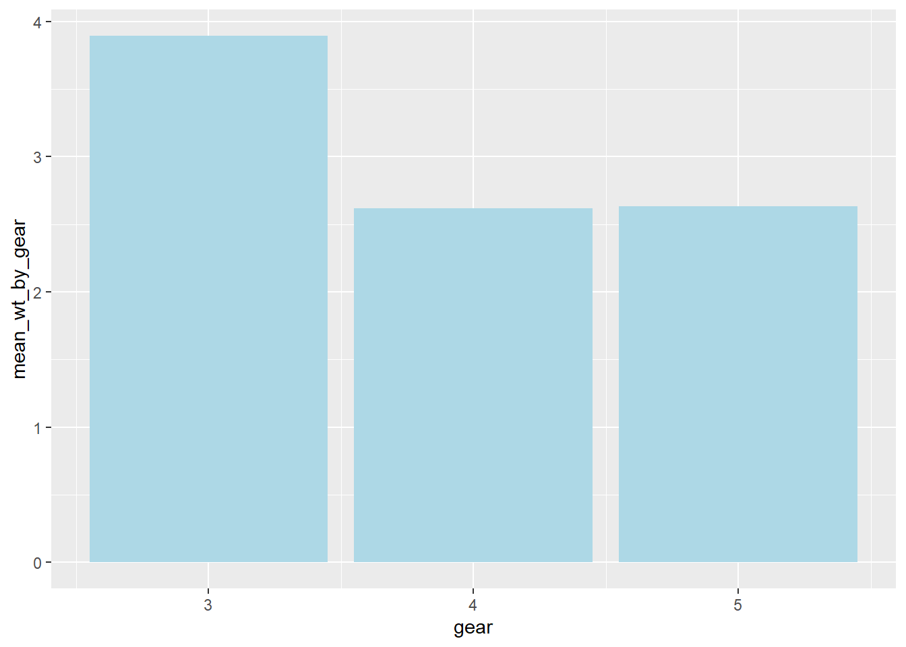
Plotting a self-defined function
my_function <- function(x) {
1 / (1 + exp(-x + 10))
}
curve(my_function, from = 0, to = 20,
xlab = "x", ylab = "f(x)",
main = "A Logistic-Shaped Curve")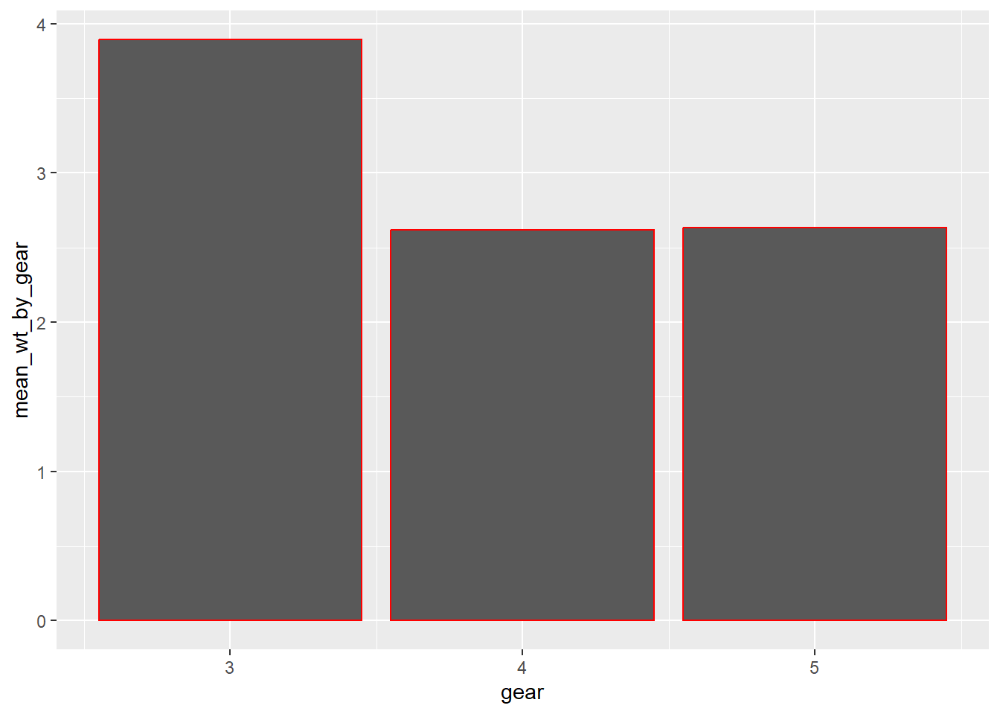
Plotting a function with additional arguments

5.7 More on plots with base R
5.7.1 Multi-frame plot
You can place multiple plots in one figure using par(mfrow = c(r, c)), which creates an \(r \times c\) layout.
set.seed(1)
x <- rnorm(100, 50, 5)
y <- x + rnorm(100, 2, 2)
# create a 2x2 multi-frame plot
par(mfrow=c(2, 2))
hist(x)
hist(y,breaks = 10)
plot(x, y)
boxplot(x, y)
5.7.2 Type of Plot
| Option | Type |
|---|---|
type = "p" |
Points (default) |
type = "l" |
Lines connecting the data points |
type = "b" |
Points and non-overlapping lines |
type = "h" |
Height lines |
type = "o" |
Points and overlapping lines |
par(mfrow = c(3, 2))
x <- -5:5
y <- x^2
plot(x, y, main = 'Default: type = "p"')
plot(x, y, type = "p", main = 'type = "p"')
plot(x, y, type = "l", main = 'type = "l"')
plot(x, y, type = "b", main = 'type = "b"')
plot(x, y, type = "h", main = 'type = "h"')
plot(x, y, type = "o", main = 'type = "o"')
5.7.3 Common plot parameters
| Parameter | Meaning |
|---|---|
type |
See Type of Plot |
main |
Title |
sub |
Subtitle |
xlab |
x-axis label |
ylab |
y-axis label |
xlim |
x-axis range |
ylim |
y-axis range |
pch |
Symbol of data points |
col |
Color of data points |
lty |
Type of the line |
cex |
Size of points/text |
lwd |
Line width |
To illustrate some of the components:
set.seed(1)
x <- rnorm(100, 50, 15)
y <- x + rnorm(100, 2, 13)
plot(
x, y,
pch = 16,
col = "red",
main = "A Scatter Plot with Custom Settings",
sub = "Example: change labels, limits, and point style",
xlab = "x",
ylab = "y",
xlim = c(0, 100),
ylim = c(0, 100)
)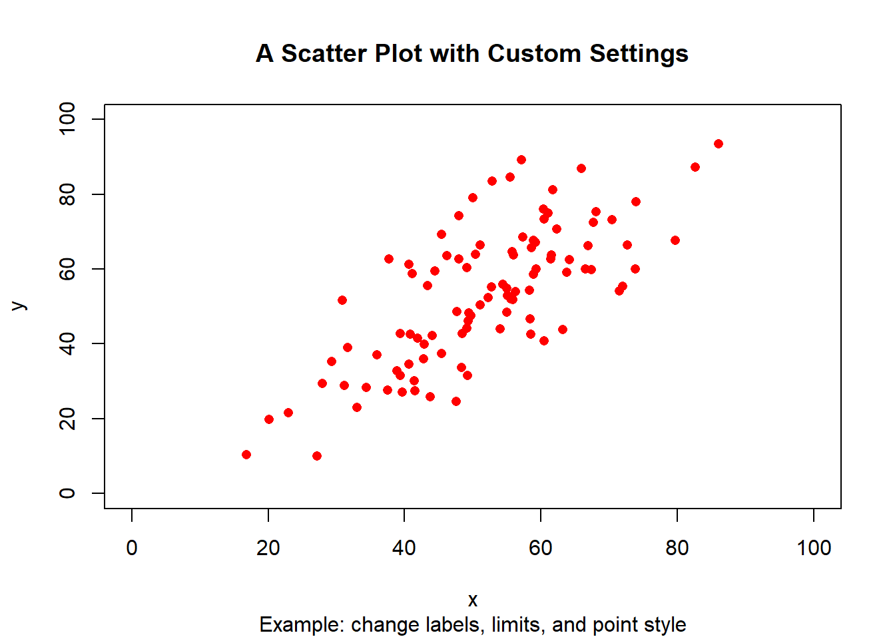
5.7.4 Elements on plot
These functions add layers after the main plot is created.
| Function | What it adds |
|---|---|
points(x, y) |
add points |
lines(x, y) |
add lines |
abline(a, b) |
add line \(y = a + b x\) |
abline(h = a) |
add horizontal line \(y = a\) |
abline(v = b) |
add vertical line \(x = b\) |
legend() |
add a legend |
set.seed(1)
x <- rnorm(100, 50, 15)
y <- x + rnorm(100, 2, 13)
plot(x, y, pch = 16, main = "Adding Lines and Reference Lines", xlab = "x", ylab = "y")
# connect three chosen points with a line
lines(x = c(20, 30, 40), y = c(20, 80, 40), col = "red", lwd = 2)
# add reference lines
abline(v = 60, col = "blue", lty = 2)
abline(h = 50, col = "blue", lty = 2)
# Optional: add a legend.
legend(
"topleft",
legend = c("Data", "Custom line", "Reference lines"),
pch = c(16, NA, NA),
lty = c(NA, 1, 2),
col = c("black", "red", "blue"),
bty = "n"
)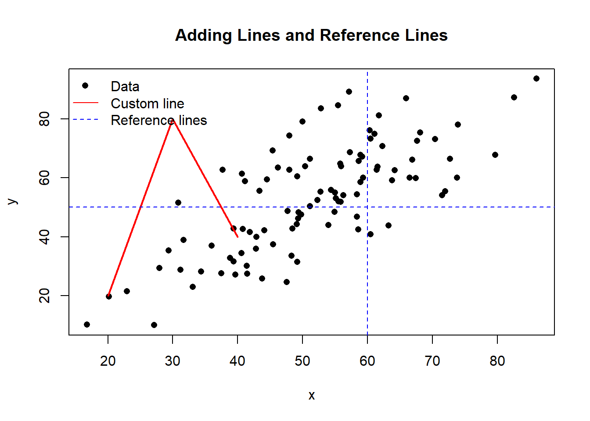